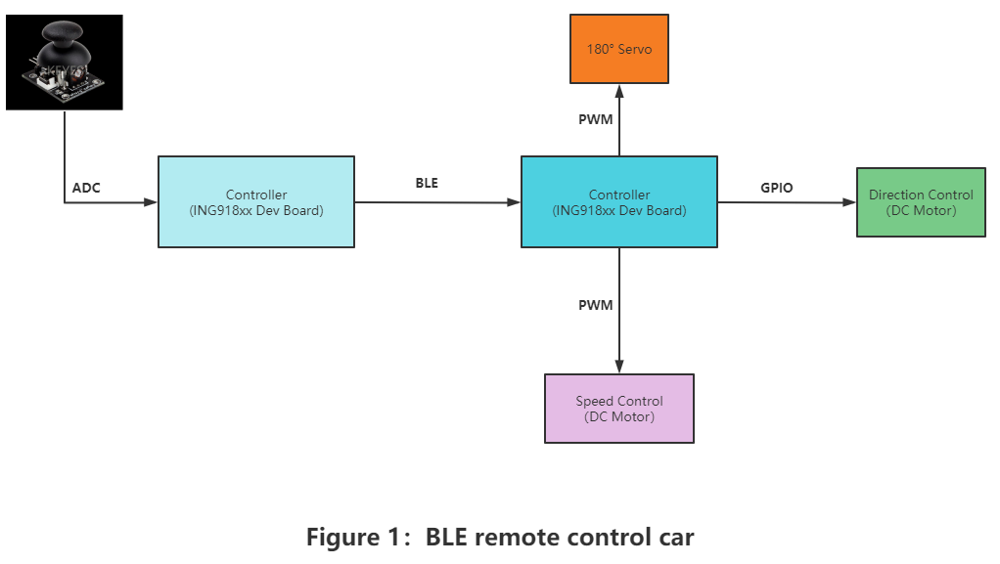
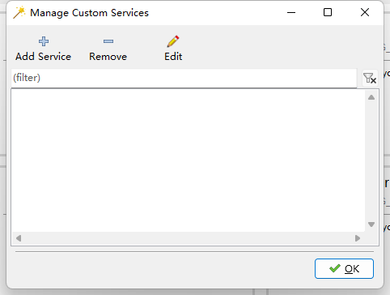
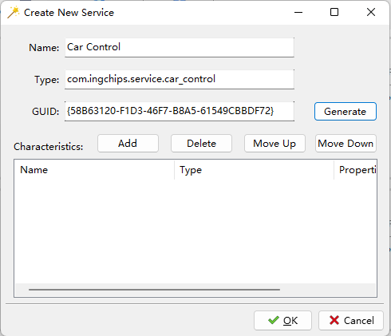
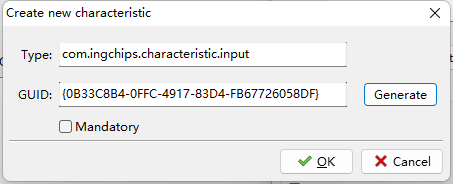
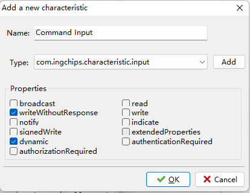
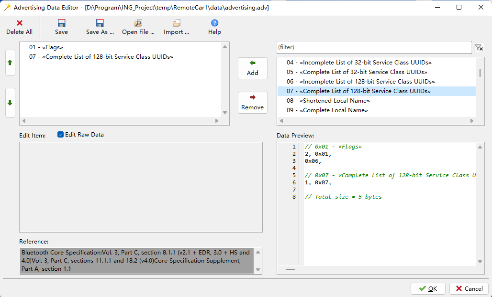
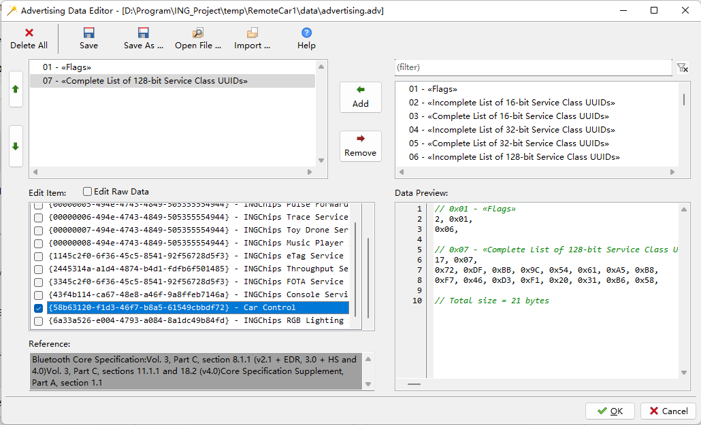
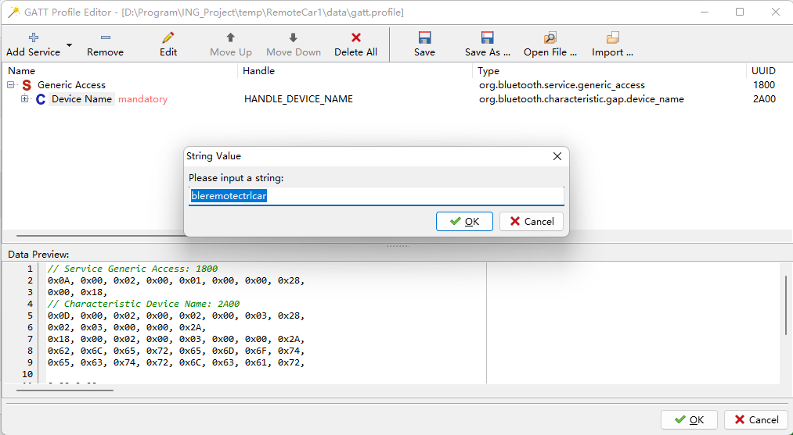
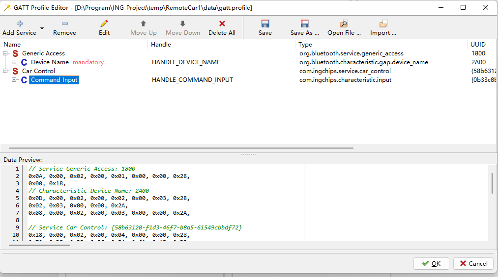
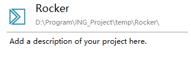

INGChips 为客户提供易用的 SDK，帮助客户便捷、高效地开发蓝牙产品。本文介绍如何通过 INGChips SDK 开发蓝牙遥控车和遥控手柄。
在设计小车之前我们先简单搭建一下系统的框架，如图我们采用两个 ING918xx 分别作为小车主体和遥控器。遥控器（Central）通过 ADC 采集摇杆数据， 并通过 BLE 将组包后数据指令传递给小车主体，小车主体通过两路 PWM 分别控制转向轮（180° Servo）和驱动轮（DC Motor），并由两路 GPIO 控制驱动轮的转动方向及停止。

蓝牙遥控小车
添加一个Customize Service
在创建项目之前，点击 ingWizard 上边栏中的 Customize Service 按钮，打开 Manage Customize Service：

点击 Add Service 创建一个新的自定义服务，将 Name 填写为 Car Control，Type 填写为 com.ingchips.service.car_control，
点击 Generate 随机生成服务 UUID 或者按照参照格式自行填写即可。

需要添加一个特征，点击Characteristics右侧的 Add 按钮，将 Type 改为com.ingchips.Charateristc.input，UUID 的生成的方法与上述方法一致。

点击 OK 按钮返回至特征创建的界面，勾选 writeWithoutResponse 和 dynamic 属性，至此，自定义服务创建完毕。我们可以新建项目了！

设置广播数据
蓝牙小车的广播数据包含 0x01 - «Flags» 和 0x07 - «Complete List of 128-bit Service Class UUID» 两项：
-
Flags
值固定为
0x06，也即置位两个bit，LE General Discoverable Mode & BR/EDR Not Supported。用广播数据编辑器添加点击0x01 - «Flags»， 勾选LE General Discoverable Mode和BR/EDR Not Supported。
-
Complete List of 128-bit Service Class UUID
勾选
Edit Raw Data，然后点击0x07 - «Complete List of 128-bit Service Class UUID»，勾选自定义的Car Control， 点击 Apply 即可在右侧边栏看到输入的 UUID，最后点击 OK 保存。
建立GATT配置文件
返回 peripheral Setup 页面，单击 Setup ATT database . . . 打开 GATT 配置编辑器。添加两个服务，
分别是 SIG Service 中的 General Access(0x1800) 和自定义的 Car Control。
首先，删除 General Access Service 中除了 Device Name of General Access 特征之外的所有特征。接下来，编辑特性值 Device Name of General Access：
右键单击特征，选择 Edit String Value . . . 菜单，并设置值为 bleremotectrlcar;

添加 Customize Service 中的服务，需要在 Add Service 按钮的下拉菜单中选择 Customize Service，并添加 “Car Control”，该服务的特征值我们不需要做修改，点击 OK 保存配置。

然后一路 Next，我们的项目就算是创建完成了。

代码编写
项目创建完成后，在 IDE 中打开 profile.c，有 ingWizard 自动生成处理函数。
添加基本服务代码
打开项目，在 profile.c 文件中我们分别创建连接句柄 handle_send 和信号量 notify_enable:
static hci_con_handle_t handle_send = 0;
static uint8_t notify_enable = 0;
void send_data()
{
uint16_t len = att_server_get_mtu(handle_send) - 3;
if (0 = notify_enable)
return;
while (att_Server_can_send_packet_now(handle_send))
att_server_notify(handle_send, HANDL_GENERIC_OUTPUT,
(uint8_t *)0x4000, len);
att_server_request_can_send_now_event(handle_send);
}
接着找到 user_packet_handler 函数，我们能看到一个名为HCI_SUBEVENT_LE_ENHANCED_CONNECTION_COMPLETE的连接事件，在每次建立连接完毕之后就会触发该事件：
case HCI_EVENT_LE_META:
switch (hci_event_le_meta_get_subevent_code(packet))
{
case HCI_SUBEVENT_LE_ENHANCED_CONNECTION_COMPLETE:
att_set_db(decode_hci_le_meta_event(packet,
le_meta_event_enh_create_conn_complete_t)->handle,
profile_data);
break;
default:
break;
}
break;
在该事件的数据包中，我们可以获取到 Central 设备发送的连接请求数据包，通过解析后可以获得其对应的连接间隔以及发送窗口，我们创建 hint_ce_len 函数，在函数内部我们将窗口大小的值通过 ll_hint_on_ce_len 上报给链路层，方便其做任务调度。
static void hint_ce_len(uint16_t interval)
{
uint16_t ce_len = interval << 1;
if(ce_len > 20)
ll_hint_on_ce_len(0, ce_len - 15, ce_len - 15);
}
因此我们将HCI_SUBEVENT_LE_ENHANCED_CONNECTION_COMPLETE事件中的代码修改为：
case HCI_SUBBEVENT_LE_ENHANCED_CONNECTION_COMPLETE:
{
const le_meta_event_enh_create_conn_complete_t *cmpl =
decode_hci_le_meta_event(packet, le_meta_event_enh_create_conn_complete_t)
handle_send = cmpl->handle;
hint_ce_len(cmpl->interval);
att_set_db(handle_send, profile_data);
}
break;
连接建立完毕后，我们还需要获取并检查连接参数，故添加一个名为 HCI_SUBEVENT_LE_CONNECTION_UPDATE_COMPLETE 的事件。
驱动电机控制
车体的驱动采用的是左右两个直流减速电机，同时我们采用这俩电机对应的驱动器模块 TB6612FNG 对电机进行控制。通过给驱动器模块输入大于 10KHz 的 PWM 波驱动电机转动，通过 A(B)IN1、A(B)IN2 两个引脚来控制驱动轮前进、停止、后退。让我们先来配置一下 PWM：
PWM配置
首先，我们需要宏定义PWM输出引脚、信号频率两个常量：
#define DRIVE_FREQ 10000 //10KHz
#define PIN_DRIVE 7 //GPIO_7
下车的驱动我们采取的是固定频率的 PWM 波，所以我们定义函数 set_freq0_drive 如下所示：
void set_freq0_drive(uint8_t channel_index, uint16_t freq)
{
uint32_t pera = PWM_CLOCK_FREQ / freq;
PWM_HaltCtrlEnable(channel_index, 1);
PWM_Enable(channel_index, 0);
if (freq > 0)
{
PWM_SetPeraThreshold(channel_index, pera);
#if (INGCHIPS_FAMILY == INGCHIPS_FAMILY_918)
PWM_SetMultiDutyCycleCtrl(channel_index, 0);
#endif
PWM_SetHighThreshold(channel_index, 0, pera); //DutyCycle is 50%
PWM_SetMode(channel_index, PWM_WORK_MODE_UP_WITHOUT_DIED_ZONE);
PWM_SetMask(channel_index, 0, 0);
PWM_Enable(channel_index, 1);
PWM_HaltCtrlEnable(channel_index, 0);
}
}
直流电机的速度通常与 PWM 波的占空比成正相关，所以，如果需要调整速度，只需要修改 PWM 的占空比。通过上述的代码，我们可以产生频率为 freq，
占空比为 50% 的 PWM波，通过调节函数 PWM_SetHighThreshold 的第三个参数可控制占空比，即伪代码 PWM_SetHighThreshold(channel_index, 0, freq * (1 - 占空比))。
驱动轮方向控制
关于 A(B)IN1、A(B)IN2 引脚输入与驱动状态关系的真值表如下所示
| A(B)IN1 | A(B)IN2 | status |
|---|---|---|
| 0 | 0 | 停止 |
| 1 | 0 | 顺时针 |
| 0 | 1 | 逆时针 |
所以我们采用开发板上的两路 GPIO 分别作为 A(B)IN1、A(B)IN2 的输入。参考 SDK 中的其他例程对 GPIO 完成初始化相关设置之后，我们通过 GIO_WriteValue 函数将所需的值写入对应的 GPIO 即可，例如：
#define PIN_AIN1_BIN2 GIO_GPIO_12
#define PIN_AIN2_BIN1 GIO_GPIO_13
GIO_WriteValue(PIN_AIN1_BIN2, 1);
GIO_WiterValue(PIN_AIN2_BIN1, 0);
方向轮控制
车端直接的方向控制所使用的是180°数字舵机，舵机转动的范围在 {-90°, -45°, 0°, 45°, 90°} ，最终小车转向轮能够转动角度为舵机转动角度值的 $1/2$。通过改变输入的PWM波形周期，从而达到控制角度的效果，真值表如下所示。
| Pulse Width(ms) | Steering Corner | Notes |
|---|---|---|
| 0.5 | -90° | |
| 1.0 | -45° | |
| 1.5 | ± 0° | |
| 2.0 | +45° | |
| 2.5 | +90° |
通过前面的分析，我们只需要给开发板的 PWM 配置参数，使其产生合适的波形，来驱动180°舵机即可。所以接下来我们来配置一下PWM。
PWM设置
首先，我们同样需要宏定义PWM输出引脚、信号频率两个常量：
#define STEER_FREQ 50 //20ms
#define PIN_STEER 8 //GPIO_8
接下来我们就可以参照 SDK 中有关 PWM 的例程,编写一个能产生固定频率的 PWM 波生成函数 set_freq0_steer,具体的代码编写我们基本可以参照前面的
set_freq0_drive。但是由于舵机有五个状态值，
所以我们需要将函数修改为set_freq0_steer(uint8_t channel_index, uint16_t freq, uint8_t steer_status)，通过参数
steer_status 将我们从遥控器发送的数据包中解算出的角度值传递给PWM波生成函数。
蓝牙小车遥控器
在ingWizard里创建项目，在Role of Your Device页面里将设备角色设定为 Central，然后一路 Next 下去，对应的项目旧创建好了。
在小车（Peripheral）端我们已经配置好了广播事件等的配置，所以遥控器（Central）端需要首先配置好扫描、连接等事件。
###配置扫描、连接事件
添加自定义UUID
const uint8_t UUID_SERV_CAR_CTRL[] = {0x58,0xb6,0x31,0x20,0xf1,0xd3,0x46,0xf7,0xb8,0xa5,0x61,0x54,0x9c,0xbb,0xdf,0x72};
添加服务特征 Command Input 的UUID
const uint8_t UUID_CHAR_CMD_IN[] = {0x0b,0x33,0xc8,0xb4,0x0f,0xfc,0x49,0x17,0x83,0xd4,0xfb,0x67,0x72,0x60,0x58,0xdf};
打开项目，在 profile.c 里找到 user_packet_handler，我们可以看到一个名为 BTSTACK_EVENT_STATE 事件，在该事件中我们可以处理有关蓝牙协议栈的一些事件,这部分的代码在项目创建后自动生成，所以我们不需要进行修改：
case BTSTACK_EVENT_STATE:
if (btstack_event_state_get_state(packet) != HCI_STATE_WORKING)
break;
. . .
gap_set_ext_scan_enable(1, 0, 0, 0);
break;
紧接着我们可以看到一个名为 HCI_EVENT_LE_META 的事件，我们找到其中的 HCI_SUBEVENT_LE_EXTENDED_ADVERTISING_REPORT 事件，并将代码修改为如下所示：
case HCI_SUBEVENT_LE_EXTENDED_ADVERTISING_REPORT:
{
const le_ext_adv_report_t *report = decode_hci_le_meta_event(packet,e_meta_event_adv_reprot_t)->reports;
if (ad_data_contains_uuid128(report->data_len, report->data, UUID_TPT))
{
gap_set_ext_scan_enable(0, 0, 0 ,0);
reverse_bd_addr(report->address, peer_addr);
if (report->evt_type & HCI_EXT_ADV_PROP_USE_LEGACY)
phy_condigs[0].phy = PHY_1M;
else
phy_configs[0].phy = (phy_type_t)(reports->s_phy != 0 ? report-s_phy :
report->p_phy);
gap_ext_create_connection(INITIATING_ADVERTISER_FROM_PARAM,
BD_ADDR_TYPE_LE_RANDOM,
report->addr_type,
peer_addr,
sizeod(phy_configs) / sizeof(phy_configs[0])
phy_configs);
}
}
连接建立完毕之后，我们需要通过匹配UUID去发现相关服务，所以我们需要创建 HCI_SUBEVENT_LE_ENHANCE_CONNECTION_COMPLETE 事件，并添加相关代码：
const le_meta_event_enh_create_conn_complete_t *conn_complete
= decode_hci_le_meta_event(packet, le_meta_event_enh_create_conn_complete_t);
if (conn_complete->status)
platform_reset();
slave.conn_handle = conn_complete->handle;
//设置PHY层参数
gap_set_phy(slave.conn_handle, 0, PHY_2M_BIT, PHY_2M_BIT, HOST_NO_PREFERRED_CODING);
//发现给定UUID的特定主服务
//对于每个找到的服务，将生成一个类型设置GATT_EVENT_SERVICE_QUERY_RESULT的le_service_event_t
//类型设置为GATT_EVENT_QUERY_COMPLETE的gatt_complete_event_t标志着发现的结束
gatt_client_discover_primary_services_by_uuid128(service_discovery_callback, conn_complete->handle, UUID_SERV_CAR_CTRL);
添加服务发现回调函数
void service_discovery_callback(uint8_t packet_type, uint16_t _, const uint8_t *packet, uint16_t size)
{
switch (packet[0])
{
//发现服务
case GATT_EVENT_SERVICE_QUERY_RESULT:
. . .
break;
//发现结束
case GATT_EVENT_QUERY_COMPLETE:
. . .
break;
}
}
添加特征发现回调函数，并通过UUID_CHAR_CMD_IN发现服务特征
void characteristic_discovery_callback(uint8_t packet_type, uint16_t _, const uint8_t *packet, uint16_t size)
{
switch (packet[0])
{
//发现特征
case GATT_EVENT_CHARACTERISTIC_QUERY_RESULT:
{
. . .
//识别服务的UUID
if (memcmp(result->characteristic.uuid128, UUID_CHAR_CMD_IN, sizeof(UUID_CHAR_CMD_IN)) == 0)
{
slave.input_char = result->characteristic;
LOG_INFO("input handle: %d", slave.input_char.value_handle);
}
}
break;
//发现结束
case GATT_EVENT_QUERY_COMPLETE:
. . .
break;
}
}
特征描述符发现回调函数
void descriptor_discovery_callback(uint8_t packet_type, uint16_t _, const uint8_t *packet, uint16_t size)
{
switch (packet[0])
{
//发现描述符
case GATT_EVENT_ALL_CHARACTERISTIC_DESCRIPTORS_QUERY_RESULT:
. . .
break;
//发现结束
case GATT_EVENT_QUERY_COMPLETE:
. . .
break;
}
}
但是考虑到连接可能不会一次性成功，每次连接失败后会触发HCI_EVENT_DISCONNECTION_COMPLETE事件，所以我们需要在该事件中添加如下代码，重新开启扫描：
reset_info(); //Initialize related parameters
gap_set_ext_scan_enable(1, 0, 0, 0); //start continuous scanning
摇杆控制
遥控器通过双轴摇杆的一系列动作引起输出口 URX、URY 的电平值的变化，所以我们需要利用开发板上的两路 AD(AD1 AD4)对 URX、URY 的值进行实时采集。
数据采集
ADC的配置我们可以参照peripheral Battery例程，并使用其 profile.c 文件中的 read_adc(uint8_t channel)函数进行数据采集。
为了能够近乎实时地获取，我们需要创建 task，并在 task 内部的 for 循环调用 read_adc，因此我们在 profile.c 的 setup_profile
函数中利用 xTaskCreate 函数创建 task：
xTaskCreate(XYcordinates_adc_task,
"x",
configMINIMAL_STACK_SIZE,
NULL,
(configMAX_PRIORITIES - 1),
NULL);
为了提高数据的准确性，我们可以在任务处理函数中添加一个简单的均值滤波器，修改后的任务处理函数代码如下所示：
// Rocker variable collection task
static void XYcordinates_adc_task(void *pdata)
{
uint16_t voltage;
for (;;)
{
filter_buffer_update(mean_filter_x_buffer, mean_filter_y_buffer,
read_adc(RK_X_CHANNEL), read_rocker_adc(RK_Y_CHANNEL), MEAN_FILTER_LEN, mean_filter_pos);
vTaskDelay(100);
}
}
数据发送
关于数据发送就比较简单了，我们按照自己的需求进行组帧，并通过 gatt_client_write_value_of_characteristic_without_response 函数进行发送。